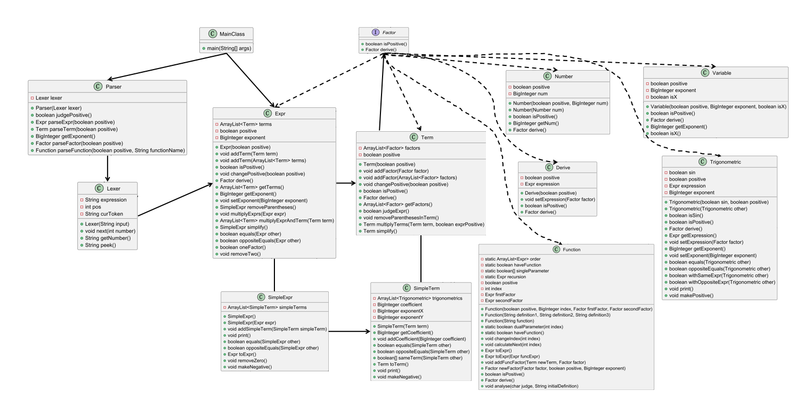
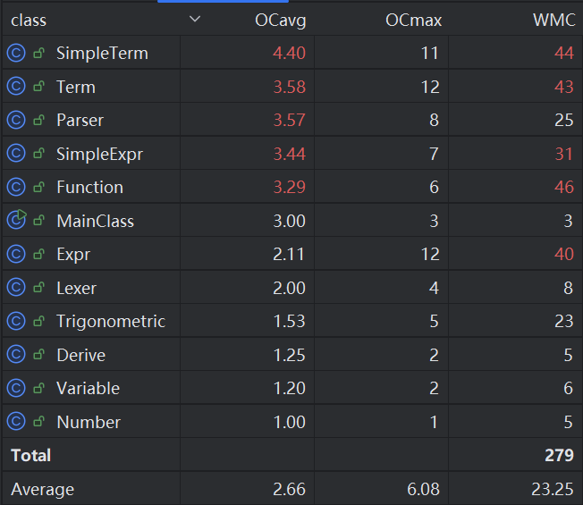

Unit 1 作业分析
作为面向对象设计与构造的第一单元，这是我真正开始系统学习以“面向对象”为理念的程序设计思路。在这单元的设计与迭代中，我学到了很多，但也意识到了自己设计上的诸多问题，需要在后面的学习中继续思考努力。
程序分析
架构分析
首先分析一下我的程序中各个类的关系以及其自身的复杂度。如下图是一个简单的类图，展示了各个类之间的实现、关联、依赖等关系。

从上图中展示的程序架构可以看出，本人的类数目不多，但部分类的方法很多。这是一个不是很好的地方。与大部分其他同学相比，我并没有设计 Poly 和 Mono 这两个类。因为在我看来，所谓“单项式”与“多项式”本质上也是“表达式”，如果单独设计新的类会导致代码繁复臃肿。当然，经历过多次迭代的我也发现，我这种思路的确有利于减少代码量，方便实现方法复用，但带来的极大的负面影响就是一个类中的方法过多，使得程序的可读性大大降低，同时影响 debug 效率。
类说明：
- MainClass：主类，用于调用函数预处理、文法分析、表达式化简等方法。
- Lexer Parser：文法分析器与词法分析器，用于将读入的字符串转化为“表达式-项-因子”的形式。
- Factor：因子接口，用于对因子的部分方法提供统一的接口。
- Expr Term Number Variable Trigonometric Function Derive：因子。分别为表达式因子、项、常数因子、变量因子（这里仅指
x^n）、三角函数因子、自定义函数因子、求导因子。 - SimpleTerm SimpleExpr：统一形式，用于结果输出。
复杂度分析

上图展示了我各个类的复杂度。可以看到，复杂度最高的两个类是 SimpleTerm 和 Term，这是因为我在对项进行简化和输出时，用了太多的情况特判，导致分支数量过大。
架构设计体验
重构分析
在本单元的作业中，我在第一周与第二周之间进行了作业重构。具体原因分析在第一次 Bug 修复的文档中有说明：
关于表达式拆括号与恒等变形的问题，本质上就是加减乘的数学计算。然而，当一个项包含多个表达式因子，即有多层括号，或者说存在指数较大的表达式因子时，以何种递归（或循环）逻辑计算便是很重要的。如果采用不合理的算法，很容易导致栈空间溢出、内存溢出和运行时间过长等问题。
在初完成作业时，我设计了一种自认为很机智的循环逻辑：首先获得对输入进行文法分析后获得的表达式，然后对其中的项进行遍历，对每一个项进行拆括号的计算。对于每一个项 term ，首先遍历其所有因子，如果没有表达式因子，则
return term（跳出，返回项）。如果遍历到一个表达式因子 expr ，则在 term 中“删除”因子 expr （对于指数不为 1 的 expr 有进一步的处理），并将其他因子记为 term2 。随后，对 expr 的每一项 exprTerm 进行遍历，并分别与 term2 相乘。当然，项与项相乘并不复杂，就是将其中因子的集合相加即可。获得项的集合，并递归调用该方法。不知读者是否意识到其中的问题。似乎这种拆括号算法非常符合正常的数学运算思路，而且十分简便，每次只要找到一个表达式因子，并且其他因子都不需要变化，从程序设计角度非常容易实现。但是，如若仔细思考便会发现问题：按照上述思路，一项中包含
n个表达式因子（指数为a的表达式因子记为a个），那就要进行 n 层递归,也就是要计算 \(\prod p_i\) 次（\(p_i\) 指第\(i\)个表达式因子的项数）！简单举例：如果某项为
(x+2-x^2)*(x+1)*(x-3)，第一层计算后得到x*(x+1)*(x-3) + 2**(x+1)*(x-3) + -x^2*(x+1)*(x-3)，对于每一项，还要再进行拆分，直到获得没有表达式因子的项。在中测结束后，我很快意识到其中的问题，并重新设计了去括号的方法。显然，
n个表达式因子进行n次计算是合理的。也就是说，应采取更直接的拆括号算法来避免过深层的递归。例如，面对一个项(x+1)*(x-4)*4*x^2，对于遍历得到的第一个表达式因子(x+1)，将之直接与下一个因子相乘，获得(x^2+x-4*x-4)，并以此继续进行计算，直至不含有表达式因子。此外，需要说明的是，面对直接拆括号的算法，多次对表达式因子进行简化、合并同类项是相当有必要的。如果表达式因子中有太多项，依旧会大幅影响程序效率。递归调用表达式的简化方法，既可以优化效率，也可以同步处理未来可能存在的多层括号问题。
扩展性分析
本次作业中，我比较引以为傲的可扩展性就是自定义函数方面，尤其是自定义递推函数。通过同学们之间的讨论交流，我发现很多同学在调用自定义函数时采用的是字符串替换的方法。这种方法简单，但是对字符串格式要求比较精准，而且需要添加大量括号避免错误，不能提前化简。
但是，我采用文法分析的方式进行函数定义和调用就不存在相应问题。例如，题目要求递推函数定义时定义格式 f{n}=num*f{n-1}+num*f{n-2}+expr，对于我的程序，就可以处理更多形式的递推函数定义，例如num变成expr，或者f{n-1}和f{n-2}缺少一项或改变顺序，这都是可以轻松实现的。
Bug 分析
在强测和互测中，我有多个 bug 被 hack。除了上述提出的重构问题外，我还存在无法解析 \(f\{\}(y)\), \(sin(()^0)\)返回 0 的问题。这些问题源于我对诸多可能的情况考虑不周，并且在最终作业提交之前未经过充分测试，这是以后迭代设计中需要我去加强的地方。
互测体验
互测是本课程的重要特色。由于代码量大，程序架构复杂，题目要求高，输入形式多变，简单的几十个数据点不可能测出所有可能的情况和程序的所有功能。因此，单独的互测环节是非常必要的。本人就在中测且强测全过的情况下，被 hack 到多个问题。
在 hack 他人时，我发现评测机是非常必要的。阅读他人代码去寻找 bug 是艰难而不现实的。因此，利用 python 自动化生成数据点并进行评测为我带来巨大的帮助。
优化分析
本次作业对性能方面要求不高，主要的优化在输出表达式的长度上。因此，我采用了一些优化，例如：cos(0)=1 sin(0)=0 sin(x)=-sin((-x)) cos(x)=cos((-x))。当然，本人的优化并未达到理想的最优情况，在互测期间和研讨课上，我还了解到一些同学更多的优化策略，包括但不限于 2*sin(x)*cos(x)=sin((2*x)) sin(x)^2+cos(x)^2=1。
心得体会
本次作业真的很有价值。我不仅经过迭代开发进一步学习了 JAVA 相关语法，更重要的是对面向对象的程序设计理念有了更清晰的认识。尽管期间重构或者迭代有时任务量很大，但是能够一点点实现题目要求的功能也会带来很多成就感。
另外，针对 bug 修复方面，我感觉我也要加强对自己程序的测试，尽力要保证在各种情况下，尤其是特殊情况的讨论，不要有考虑不周的情况。